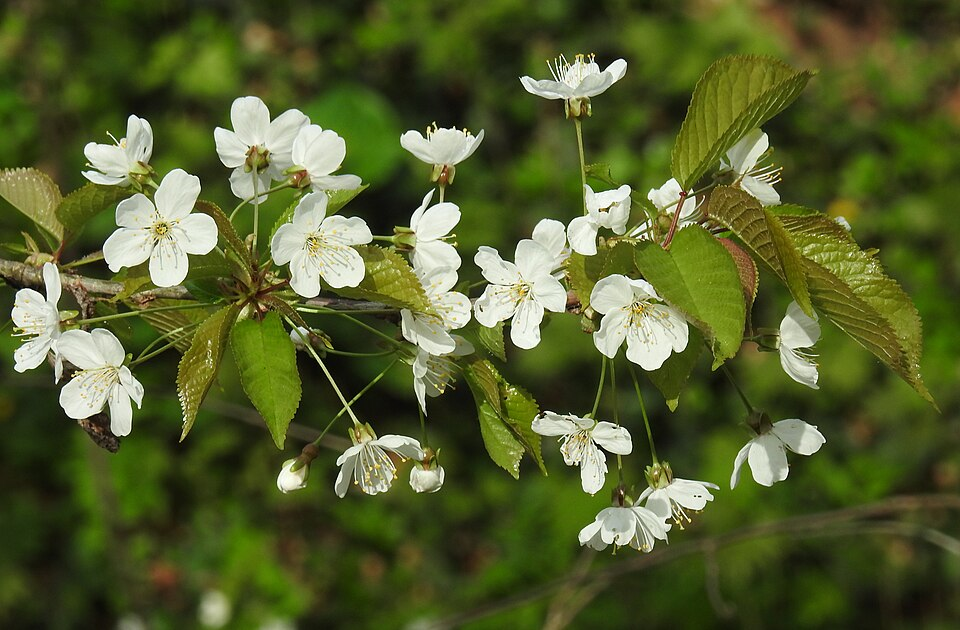

Ciliegio: uso tradizionale, proprietà e avvertenze
Prunus avium; Prunus cerasus

Albero da frutto dei boschi e dei frutteti europei, con fiori bianchi in primavera. La parte usata in fitoterapia non è il frutto ma il peduncolo, cioè il picciolo che regge il frutto.
Proprietà attribuite dalla tradizione
- Monografia EMAMonografia UE (2024): uso tradizionale per il sollievo dei disturbi urinari minori, insieme al consiglio di bere sufficiente acqua. I peduncoli di Prunus avium e Prunus cerasus sono considerati intercambiabili (EMA 2024a; EMA 2024b).
- Evidenza preliminareUno studio crossover piccolo ha mostrato un aumento significativo del volume urinario rispetto al controllo (Hooman 2009). Nei ratti, l'effetto diuretico del peduncolo è stato circa il 70-80% di quello del furosemide (Babota 2021, citati in EMA 2024b). Lo studio umano è piccolo e non basta a giustificare un'indicazione autonoma (EMA 2024b).
- Uso tradizionaleIl peduncolo è usato come diuretico in più paesi europei, con riferimenti che risalgono al XIX secolo; è citato nella farmacopea francese (EMA 2024b).
Uso tradizionale
Infuso o decotto di 2-6 g di peduncolo essiccato in 200 ml d'acqua, da 2 a 4 volte al giorno, per adulti e anziani. Se il disturbo persiste per più di due settimane, consultare il medico (EMA 2024a).
Avvertenze e controindicazioni
Controindicazione: ipersensibilità alla sostanza attiva. Non raccomandato sotto i 18 anni, in gravidanza e in allattamento, per mancanza di dati. Non raccomandato a chi deve limitare i liquidi per indicazione medica, perché la terapia richiede un'adeguata assunzione di acqua (EMA 2024a). Possibile cautela nei calcoli renali: uno studio riporta un aumento dell'escrezione urinaria di calcio, sodio e cloruro (Hooman 2009, citato in EMA 2024b). Nella farmacovigilanza sono state trovate poche segnalazioni (iponatriemia; vertigini e dolore addominale; mal di testa con urine torbide), che non permettono di stabilire un nesso causale: in due casi il prodotto era combinato con altre erbe e la descrizione era limitata (EMA 2024b). Per le interazioni e gli effetti indesiderati la monografia non riporta nulla di noto (EMA 2024a). In caso di sintomi urinari che peggiorano, con febbre, bruciore, spasmi o sangue nelle urine, consultare il medico. Avvertenza sulla preparazione: alimento, infuso, estratto e olio essenziale non sono equivalenti, e le indicazioni di sicurezza di una preparazione non valgono automaticamente per le altre.
Fonti
- EMA/HMPC, European Union herbal monograph on Prunus avium L.; Prunus cerasus L., peduncle (EMA/HMPC/379866/2023), 2024.
- EMA/HMPC, Assessment report on Prunus avium L.; Prunus cerasus L., peduncle (EMA/HMPC/379865/2023), 2024.
- Hooman et al. 2009; Babota et al. 2021 (citati in EMA 2024b).